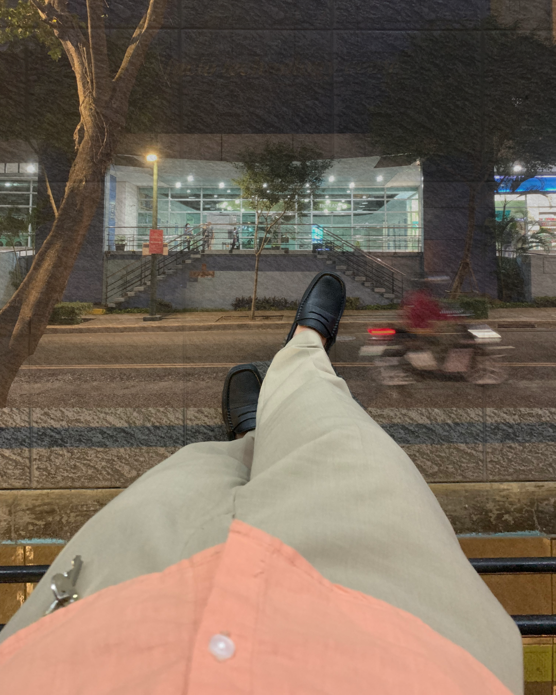

Cornelia Street (Part 1)
 Market Market to Bonifacio High Street
Market Market to Bonifacio High Street
I went to BGC. I was supposed to drink, but rather spend money on beer, I decided to walk around BGC for a while. The last time I went there was our first monthsary, and your last day of internship. To be honest, I've been thinking of going back to BGC for a while now, but I was scared. I was scared of the memories that would come back, and the emotions that would come with it. But I also knew that I can face those memories and emotions and handle them. I made sure I was grounded before I went there. After my shift, I went ahead to BGC through Guadalupe 'cause you know, there's always heavy traffic in Forbes Park. I also documented everything.
I went to Market Market first, where we had our photoshoot. As I stepped out of the elevator, I immediately felt the nostalgia. I remembered how we were so excited to have our photoshoot there, and how we were so nervous about it. I remembered how we were so happy to be there, and how we were so proud of the photos we took. I got teary-eyed walking to the photobooth, and I couldn't help but smile at the same time. I was happy to be there, but I was also sad that you weren't there with me. I stayed there for a while before I decided to go to the next spot.
I passed through high street remembering how we used to walk around here. Then I stopped by the Burgos Circle, and sat there for a while. I thought I would crash out there; surprisingly, I didn't. I just sat there, and let the memories wash over me. I remembered waiting here for you to finish your shift. It kinda felt heavy that I'm near Bonifacio, knowing that I won't be meeting you there anymore.

Now I'm here. I stood by the front entrance. It felt like I was waiting for you to come out,
but I knew you won't be coming out anymore. The wave of emotions hit me. I missed you, and I let myself feel that. I smiled looking back at
the memories we had here. Walking long distances didn't tire me 'cause I knew I'd be with you. Waiting and standing wasn't a problem whenever
I'm with you. Ditching my last class to be with you was never a problem (I still aced that class, by the way).
It felt weird and peaceful that I'm strolling here alone.
I won't deny that what I did was hard, but healing. This is
how I re-learn to be with myself.
Eli.